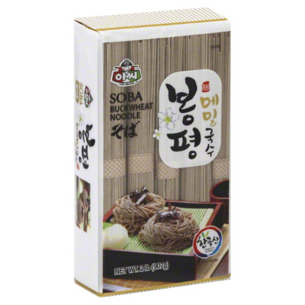
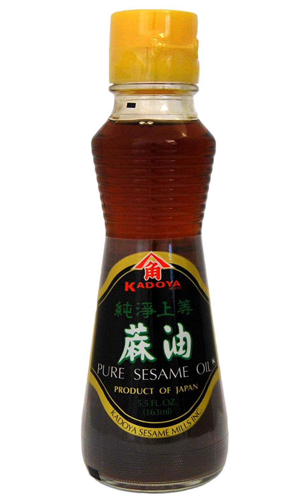
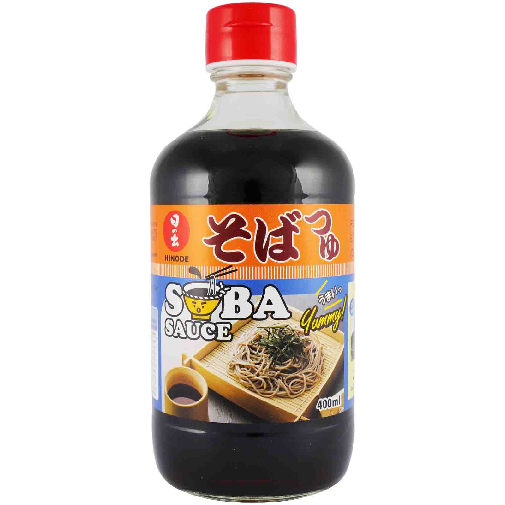

cold soba
a nice slow breakfast on a hot day.
soba noodles
- green onions
sesame oil
- sesame seeds
-
soba sauce (optional)
- bring water to the boil and cook soba for around 4 minutes. make sure the noodles have enough space not to stick. rinse hard with cold water to stop them becoming sticky
- drizzle with sesame oil to stop them sticking (and a little light soy if you fancy it), and top with sesame seeds and diced green onions. serve either with soba sauce, or soy mixed with dashi and mirin.
- pairs well with fried eggs, greens and pickles.